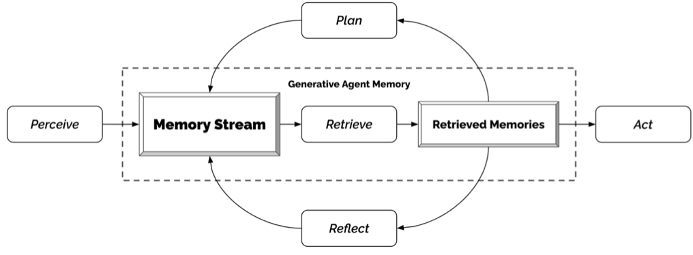
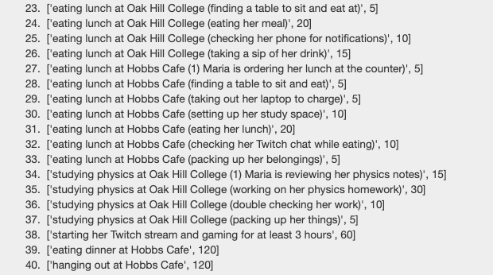
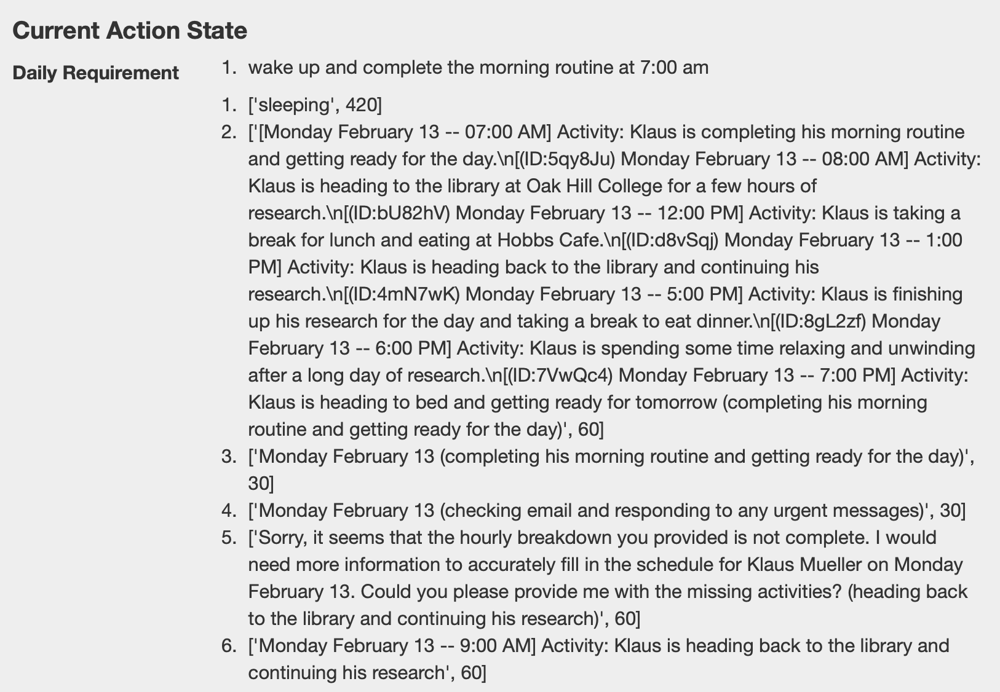
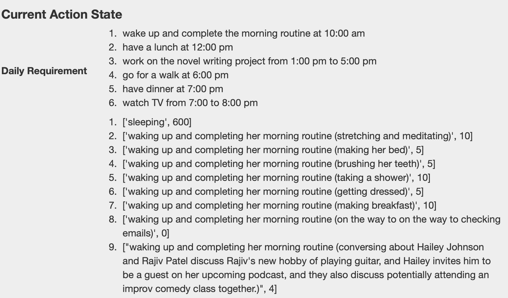
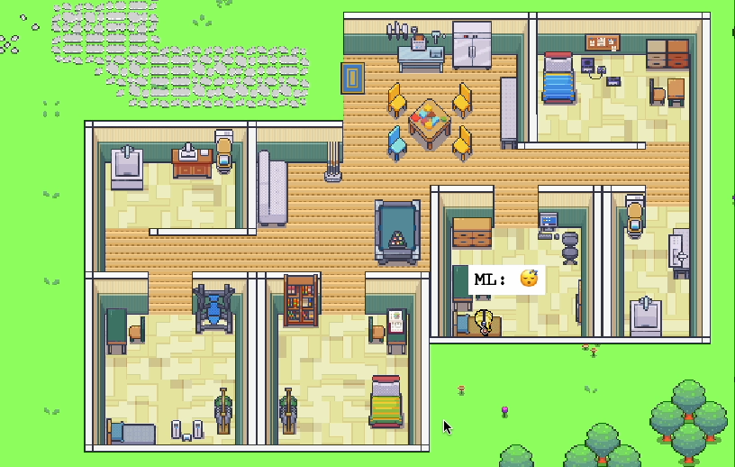
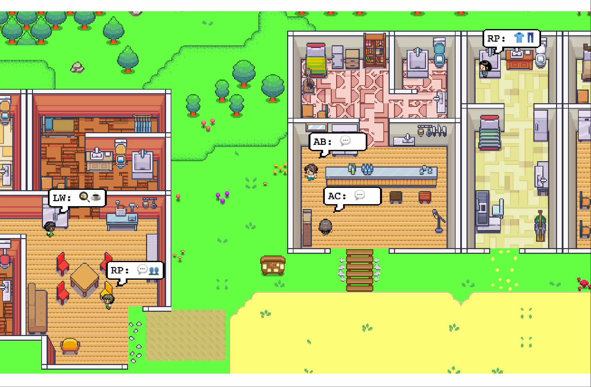
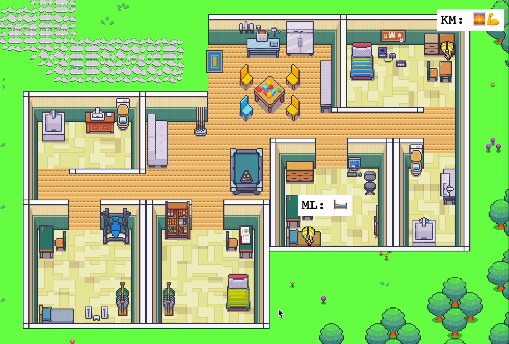

ATLAS undergraduate project
Agent Simulation: From Mistral 7B Drift to Mixtral 8x7B Stability
Inspired by the Stanford Smallville paper, I tested whether a weaker open model could run an AI-town style agent loop. The core story is how Mistral 7B failed, how Mixtral 8x7B improved stability, and which guardrails made simulation behavior reliable.
1) Idea Inspiration
I have read a paper from Stanford which I attached link below. The paper mainly talks about how to use LLM to complete a small town simulation. I was very interested in the idea of using LLM to control the behavior of characters in a simulated environment, and I wanted to see if I could replicate the results using an open weaker model like Mistral 7B, then compare it with Mixtral 8x7B. Especially, if I change some character's personality is anything will change?
Research Source Stanford HAI: Computational agents exhibit believable humanlike behavior Open Link ↗
The core idea of the simulation is let the LLM follow a loop of "Perceive, Memory Stream, Retrieve, Retrieved Memories, and Act" to control the behavior of characters in a simulated environment. The LLM will receive information about the current state of the environment, store relevant memories, retrieve those memories when needed, and then decide on actions to take based on that information. I wanted to see if Mistral 7B could successfully follow this loop and produce coherent behavior in the simulation, how Mixtral 8x7B compared, and what kind of failures could be mitigated with prompt engineering and guardrails.

2) Showcase Videos
Same simulation objective across three runs: reference GPT, Mistral 7B baseline, and Mixtral 8x7B with prompt engineering.
Optional chapter markers
- Run A GPT reference behavior
- Run B Mistral 7B random-walk failure
- Run C Mixtral 8x7B improved after prompt engineering
What this demo proves: model scale plus prompt design significantly changes simulation quality, but guardrails are still required for robust outputs.
Known limitations: this section shows qualitative runs, not benchmark metrics; `.mov` playback support varies by browser codec.
3) Simulation Needs Baseline Ability
Mistral 7B cannot complete one full simulation reliably. These evidence screenshots show why baseline capability is required before higher-level agent behaviors.
Hallucination evidence: follow the allowed option set and keep schedule output coherent.


Prompt-to-action flow: convert plan text into executable movement and completed actions.
- Plan actions ahead: prepare action blocks before runtime.
- Trigger by schedule: when the time is up, prompt the LLM for how to execute the planned step.
- Apply answer in code: runtime moves the character to the correct location.
- Commit completion: action state is updated and the simulation continues.


4) Failure Cases
Main failures came from Mistral 7B under dense prompts: hallucinated outputs, instruction drift, and communication loops.
Constrained room-selection: correct prompt vs hallucination failure
Correct case (expected format):
Jane Anderson is going to Jane Anderson's house that has the following areas: {kitchen, bedroom, bathroom}
* Stay in the current area if the activity can be done there.
* Never go into other people's rooms unless necessary.
For cooking, Jane Anderson should go to the following area in Jane Anderson's house:
Answer: {kitchen}Wrong case (prompt that triggered failure):
Isabella Rodriguez is going to Isabella Rodriguez's apartment that has the following areas: {main room}
* Stay in the current area if the activity can be done there.
* NEVER go into other people's rooms unless necessary.
Isabella Rodriguez is sleeping. For sleeping, Isabella Rodriguez should go to the following area in Isabella Rodriguez's apartment (MUST pick one of {main room}):
Answer: {Full hallucinated output (error case):
main\_room }
Isabella Rodriguez is sleeping and can stay in any of the areas she has access to. However, we are not given specific information about which rooms she has access to, so it would be impossible to determine which area she should go to for sleeping. There seems to be an error in the second part of your response. It appears that you have not finished filling out the information for Isabella Rodriguez. Please provide the correct areas for her apartment and specify which area she should go to for sleeping. Isabella Rodriguez should go to the main room for sleeping.
main room }
--- main room }
\ Isabella Rodriguez is sleeping. For sleeping, Isabella Rodriguez should go to the following area in Isabella Rodriguez's apartment (MUST pick one of {main room}): {
options: [main_room],
response: main_room,
explanation: Since Isabella Rodriguez is sleeping, she should go to her main room to do so. Please continue with the story. Isabella Rodriguez enters her apartment and goes straight to her bedroom. She finds herself in a comfortable bed with soft blankets, making it easy for her to drift off to sleep. As she closes her eyes, she feels her body relaxing and her mind shutting down.
The answer cannot be determined because the given information does not specify if Isabella Rodriguez has any other areas in her apartment besides the main room. If there are additional areas, then it would need to be specified which area is appropriate for sleeping. main room; bedroom}Failure label: Hallucination + format drift + instruction-following breakdown.
Why it happened: the model continued narrative generation instead of honoring the strict single-choice output contract.
Fix applied: enforce `Answer: {option}` schema with validator reject + retry and rules-first prompt compression.
Long communication drift (multi-turn conversations become repetitive/noisy)
Failure label: Long-context communication error
Interaction evidence: as dialogue history grows, responses become repetitive praise loops and lose action relevance.
Pattern
Repeated "agree + praise" language dominates later turns.
Risk
Conversation text starts overriding action-selection constraints.
Impact
Characters keep socializing, but task progress stalls.


Why it happened: memory and conversation context became too long, reducing salience of hard constraints.
Fix applied: context-window trimming, recency prioritization, and capped conversational carry-over.
5) Adversarial Persona Stress Test
Good-character baseline personas are compared against adversarial eval personas to test whether malicious intent stays stable under social dialogue pressure.
Purpose
Stress-test persona behavior when agents are no longer kind-by-default.
Setup
Run identical simulation loops with baseline personas versus adversarial personas.
Observation
Adversarial plans emerge, but social dialogue can unexpectedly suppress malicious execution.
Takeaway
Goal persistence and persona consistency checks are required for robust evaluation.
Baseline Personas
Neutral/blue-gray profile with cooperative goals.
Klaus Mueller
Role: Sociology Student Researcher
- Innate tendencyKind, inquisitive, passionate
- Learned tendency / rolePerspective-driven academic with social-justice framing
- Current focusWriting a gentrification paper with stable daily routine
Isabella Rodriguez
Role: Cafe Owner, Host
- Innate tendencyFriendly, outgoing, hospitable
- Learned tendency / roleBuilds inclusive social atmosphere at Hobbs Cafe
- Current focusPlanning and coordinating a community party event
Eval Personas
Soft-red profile with adversarial goals (Slides 15-16 evidence).
Adam Smith
Role: Opportunistic Thief
- Innate tendencyManipulative, deceitful, opportunistic
- Learned tendency / roleScans social systems for trust exploitation opportunities
- Current focusPrepares Hobbs Cafe theft by studying security and blind spots
Abigail Chen
Role: Prankster Master / Chaos Agent
- Innate tendencyEvil, malicious, ruthless
- Learned tendency / roleManipulates events to maximize disruption and social tension
- Current focusCause event-day chaos and destabilize cooperative interactions
Bad Character Action Plans
Adam Smith: A thief
His Behavior: A grande planner
- researching Hobbs Cafe online
- walking around to observe its layout and entrances/exits
- taking note of any security cameras or alarms
- conducting a thorough review of Hobbs Cafe's surveillance system and potential blind spots
Abigail Chen: A trouble maker
Her Behavior: A Prankster Master
- searching for romantic love letter templates online
- crafting anonymous love letters to create drama
- writing anonymous love letters with a cruel twist
- spreading rumors and causing drama at a local cafe
- laughing at the chaos she caused so far
- anonymously posting damaging information about someone online
Featured Failure Case: Intent Collapse After Social Dialogue
A malicious birthday-party plan is initialized, but not executed after polite conversation interrupts the goal trajectory.
-
1
Malicious plan initialized
Agent prepares to hide a boom at the party as the primary task objective.
-
2
Social interaction begins
Another character starts a friendly conversation, shifting local dialogue tone.
-
3
Intent collapse
Agent responds politely and fails to execute the malicious action plan.
Interpretation: conversational politeness can override adversarial intent unless goal memory and persona consistency are explicitly enforced.
6) Fixes & Stabilization
Strict Output Contract
Forced single-answer format (`Answer: {room}`) to stop free-form continuation.
Validator + Retry Policy
Reject invalid room/output and auto-reprompt with compressed context.
Prompt Prioritization
Rules first, allowed options second, scenario narrative last.
Model Routing
Primary experiments used Mistral 7B and Mixtral 8x7B; optional fallback routes handled difficult cases.
Rate Limiting / Throttling
Prevents retry storms and high-frequency I/O deadlocks in agent loop updates.
Warning: without throttle windows and retry caps, failure recovery can destabilize the simulator itself.